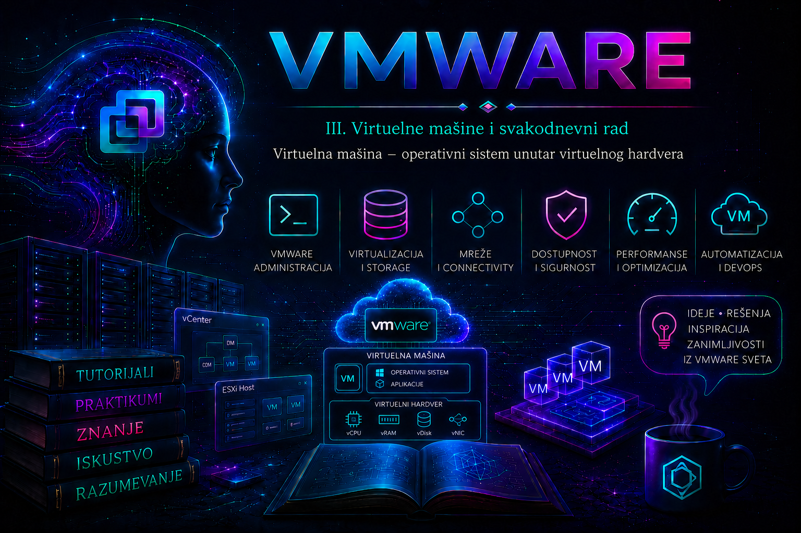

VMware

Virtuelna mašina (Virtual Machine – VM) osnovna je izvršna i upravljačka jedinica VMware infrastrukture. Ona je softverski definisan računar: ima virtuelni procesor, memoriju, kontrolere, diskove, mrežne adaptere i firmver, a unutar tog virtuelnog hardvera izvršava gostujući operativni sistem (guest operating system) i njegove aplikacije. Za aplikaciju VM uglavnom izgleda kao samostalan server, dok administrator infrastrukture istovremeno vidi da njen rad zavisi od ESXi hosta, datastore-a, virtuelne mreže, politika resursa i upravljačkog sloja vCenter Servera.
Prethodne lekcije objasnile su ESXi, vCenter, inventarsku hijerarhiju i Resource Pool. Sada prelazimo na objekat koji te resurse stvarno koristi. Ova lekcija uspostavlja tehnički model virtuelne mašine, njene granice, zavisnosti, identitet, datoteke i životni ciklus. Detaljan postupak kreiranja sledi u lekciji 12, pojedinačni virtuelni uređaji u lekciji 13, VMware Tools u lekciji 14, a standardizacija pomoću template-a i kloniranja u lekciji 15.
Šta virtuelna mašina jeste, a šta nije
VM nije emulator kompletnog fizičkog računara u uobičajenom smislu niti je samo „operativni sistem u jednom fajlu”. ESXi obezbeđuje standardizovanu virtuelnu hardversku platformu, raspoređuje izvršavanje vCPU-a na fizičke CPU niti, mapira memoriju gosta na memoriju hosta i posreduje u pristupu storage-u i mreži. Gost dobija uređaje sa sopstvenim drajverima i ponaša se kao zaseban računar, ali kapacitet, dostupnost i performanse deli sa drugim workload-ima na istoj infrastrukturi.
Gostujući operativni sistem može prepoznati da je virtuelizovan, na primer preko informacija o platformi, virtuelnih uređaja i VMware Tools-a. Zbog toga tehnički nije precizno tvrditi da gost „ne zna” da radi u VM-u. Važna osobina jeste da aplikacije uglavnom ne moraju biti prepravljene samo zato što se izvršavaju u virtuelnoj mašini. Izuzeci postoje kod softvera vezanog za specifičan fizički uređaj, hardverski ključ, stroga pravila licenciranja, ekstremno nisku latenciju ili nepodržanu kombinaciju gosta i virtuelnog hardvera.
| Sloj | Šta obezbeđuje | Administratorska odgovornost |
|---|---|---|
| Fizička infrastruktura | CPU, RAM, storage i mrežne adaptere | Kapacitet, redundansa, firmware i kompatibilnost |
| ESXi | Izvršavanje i izolaciju VM-ova, raspoređivanje i virtuelne uređaje | Zdravlje hosta, patching, drajveri, resursi i logovi |
| Virtuelna mašina | Konfiguraciju virtuelnog hardvera i identitet workload-a | Pravilno dimenzionisanje, mreža, storage, politike i lifecycle |
| Gostujući OS | Procese, servise, sistem datoteka i upravljanje aplikacijama | Patching gosta, hardening, backup na aplikativnom nivou i monitoring |
| Aplikacija | Poslovnu uslugu i podatke | Vlasništvo, SLA, zavisnosti, RPO/RTO i test oporavka |
Kako VM koristi fizičke resurse
Fizički server: CPU, RAM, HBA/NIC i lokalni ili zajednički storage
│
ESXi host
│
raspoređivanje, izolacija i I/O posredovanje
┌───────┴────────┐
│ │
VM01 VM02
virtuelni hardver virtuelni hardver
│ │
gostujući OS gostujući OS
│ │
aplikacije aplikacijevCPU nije trajno vezan za jedno fizičko jezgro. ESXi scheduler raspoređuje njegovo izvršavanje na raspoložive logičke procesore. Memorija konfigurisana VM-u predstavlja njen adresni prostor, ali fizička memorija hosta ostaje zajednički i konačan resurs. Virtuelni disk predstavlja blok uređaj za gosta, dok se podaci fizički nalaze u datotekama ili objektima na datastore-u. Virtuelni mrežni adapter povezuje se sa port group-om, a zatim preko virtual switch-a i uplink-a izlazi prema fizičkoj mreži kada je to potrebno.
Izolacija ne znači da su VM-ovi nezavisni od zajedničke infrastrukture. Zasićen datastore, gubitak mrežnog uplink-a, memory contention ili otkaz hosta mogu istovremeno pogoditi više mašina. Zato se incident nikada ne dijagnostikuje samo iz gosta: proveravaju se i VM, host, datastore, mreža, klaster, poslednje promene i zavisne usluge.
Virtuelni hardver i kompatibilnost
Tipična VM sadrži vCPU, memoriju, BIOS ili UEFI firmver, jedan ili više VMDK diskova, virtuelni SCSI, SATA ili NVMe kontroler, mrežni adapter i po potrebi CD/DVD, USB kontroler, virtual Trusted Platform Module (vTPM), PCI passthrough ili druge uređaje. Izbor uređaja utiče na podršku gosta, performanse, mogućnost hot-add operacija, migraciju i bezbednost. Sama mogućnost da se uređaj doda ne znači da je kombinacija podržana ili dobro projektovana.
Virtual machine compatibility, često nazivana verzijom virtuelnog hardvera, određuje skup funkcija i uređaja dostupnih VM-u i minimalnu verziju ESXi hosta na kojoj ona može da radi. Nadogradnja kompatibilnosti nije rutinska kozmetička izmena: mora se proveriti interoperabilnost sa svim hostovima na koje VM može dospeti, backup proizvodom i planom povratka. U heterogenom klasteru prerana nadogradnja može onemogućiti migraciju na stariji host. Aktuelne granice uvek se proveravaju u dokumentaciji konkretne vSphere/VCF verzije i VMware Compatibility Guide-u, a ne pamte kao univerzalni brojevi.
Identitet virtuelne mašine
Jedna VM ima više identifikatora: prikazno ime u inventaru, putanju konfiguracione datoteke, Managed Object Reference u vCenter-u, instance UUID, BIOS UUID, MAC adrese, ime računara i identitete samog operativnog sistema ili aplikacije. Oni nisu međusobno zamenljivi. Promena prikaznog imena u vSphere Client-u ne mora automatski promeniti naziv direktorijuma i svih datoteka na datastore-u. Zato automatizacija, CMDB i incidentna dokumentacija ne treba da se oslanjaju samo na ime koje čovek može promeniti.
Kopiranje ili kloniranje VM-a može otvoriti pitanje da li je mašina „moved” ili „copied”, odnosno da li treba zadržati ili generisati novi UUID i MAC identitet. Pogrešan izbor može stvoriti duplikate, probleme sa licencama, monitoringom, backup katalogom ili mrežom. Ova tema se operativno razrađuje uz kloniranje; ovde je ključno pravilo da se identitet VM-a tretira kao kontrolisan podatak, a ne kao običan naziv fajla.
Datoteke koje čine virtuelnu mašinu
Na tradicionalnom VMFS ili NFS datastore-u VM je predstavljena skupom povezanih datoteka. Tačan skup zavisi od konfiguracije, power stanja, snapshot-ova, enkripcije i vrste storage-a. Na objektno zasnovanom storage-u, kao što je vSAN, administratorski prikaz može apstrahovati fizički raspored objekata; zato model „jedan direktorijum sa svim delovima” nije univerzalan opis svakog backend-a.
| Datoteka ili grupa | Uloga | Važna napomena |
|---|---|---|
.vmx | Primarna konfiguracija VM-a i reference ka uređajima | Ručno uređivanje nije standardna administrativna praksa; pogrešna putanja može sprečiti power-on. |
.vmdk descriptor i data extent, npr. -flat.vmdk | Definicija i podaci virtuelnog diska | Datastore Browser često prikazuje disk kao jednu logičku celinu. Ne brišu se pojedinačni delovi. |
-delta.vmdk ili drugi snapshot extent | Promene nastale uz snapshot lanac | Ne menjati, preimenovati niti brisati ručno; snapshot nije backup. |
.nvram | Stanje BIOS/UEFI promenljivih | Može sadržati boot i firmware podešavanja. |
.vswp | VM swap datoteka koju ESXi tipično kreira pri uključivanju | Veličina zavisi i od memory reservation; zahteva raspoloživ prostor. |
.vmsn, .vmss | Stanje memorije za snapshot sa memorijom ili suspend | Mogu biti veliki približno u odnosu na memorijsko stanje VM-a. |
.vmsd | Metadata snapshot stabla | Nije zamena za podatke u snapshot diskovima. |
vmware.log i rotirani logovi | Rad VMX procesa, virtuelni uređaji i power operacije | Ključni dokaz pri power-on problemu; vreme korelisati sa Tasks and Events. |
.vmxf | Dopunske informacije o VM-u | Ne postoji nužno u svakom scenariju i nije centralna konfiguracija. |
Brisanje ili preimenovanje datoteka direktno na datastore-u može prekinuti lanac diska, ostaviti inventarski objekat bez konfiguracije ili izazvati gubitak podataka. Podržane operacije kroz vCenter/Host Client, PowerCLI ili API održavaju veze između inventara i storage-a. Pre bilo kakvog ručnog zahvata prikupljaju se dokazi, proverava backup i koristi odgovarajući Broadcom Knowledge Base postupak za konkretnu grešku.
Power stanje, stanje gosta i operacije nisu isto
| Pojam | Značenje | Operativna posledica |
|---|---|---|
| Powered On | VMX proces je aktivan i virtuelni hardver radi. | Ne dokazuje da je gost završio boot niti da aplikacija radi. |
| Powered Off | Virtuelni hardver nije uključen. | Može biti rezultat urednog shutdown-a ili hard power-off operacije. |
| Suspended | Izvršavanje je pauzirano, a stanje se čuva radi nastavka. | Troši storage i nije isto što i gašenje ili backup. |
| Guest Shutdown | Zahtev gostu da se uredno ugasi, obično uz funkcionalan VMware Tools kanal. | Gost zatvara servise i filesystem; preferirani postupak kada je dostupan. |
| Power Off | Isključivanje virtuelnog napajanja. | Ekvivalent prekidu napajanja; rizik korupcije i gubitka podataka. |
| Reset | Hard reset virtuelnog hardvera. | Nije stanje nego rizična operacija, slična reset dugmetu na serveru. |
Važno je razlikovati četiri nivoa zdravlja: vCenter može videti VM kao Powered On; ESXi može imati aktivan VMX proces; VMware Tools heartbeat može pokazivati da gost odgovara; a aplikacioni monitoring tek potvrđuje da poslovna usluga radi. Nijedan pojedinačni indikator nije dokaz za sve nivoe.
Životni ciklus i promene
- zahtev, vlasništvo, klasifikacija podataka i izbor odgovarajućeg standarda;
- kreiranje ili deployment iz odobrenog template-a;
- instalacija i hardening gosta, VMware Tools-a i agenata;
- validacija resursa, mreže, storage-a, backup-a, monitoringa i dokumentacije;
- redovan rad, patching, kontrolisane izmene i capacity review;
- migracija, promena resursa ili nadogradnja kompatibilnosti uz pre-check i rollback;
- decommission: potvrda vlasnika, zadržavanje podataka, uklanjanje iz backup-a, DNS-a, monitoringa, licenci i CMDB-a;
- kontrolisano uklanjanje iz inventara ili brisanje sa diska, uz audit trag.
Remove from Inventory uklanja registraciju objekta, ali u pravilu ne briše njegove datoteke; Delete from Disk uklanja i podatke i zato je destruktivna operacija. Naziv opcije i dostupnost zavise od klijenta, verzije i privilegija, ali poslovna razlika mora biti jasna pre svake decommission aktivnosti.
Dostupnost, performanse, bezbednost i oporavak
Fleksibilnost VM-a ne garantuje visoku dostupnost. vSphere HA može nakon otkaza hosta restartovati VM na drugom hostu ako su ispunjeni preduslovi, ali to nije isto što i neprekinut rad aplikacije. vMotion smanjuje prekid tokom planiranog premeštanja, ali ne zamenjuje aplikativni cluster. Snapshot omogućava kratkotrajnu tačku povratka za kontrolisanu promenu, ali ne predstavlja nezavisnu backup kopiju. RPO i RTO moraju biti definisani na nivou poslovne usluge, a restore redovno testiran.
Prevelika VM nije nužno brža. Višak vCPU-a može povećati vreme čekanja na raspoređivanje, prevelika memorija smanjuje raspoloživ kapacitet hosta, a nekontrolisan thin provisioning ili snapshot rast mogu napuniti datastore. Ispravna veličina zasniva se na baznoj liniji i merenjima tokom reprezentativnog perioda, uz razumevanje zahteva aplikacije, NUMA topologije i očekivanih vršnih opterećenja.
VM je i bezbednosna granica, ali ne apsolutna. Primenjuju se najmanje privilegije, odvajanje administratorskih uloga, patching hosta i gosta, Secure Boot/vTPM kada su podržani i opravdani, kontrola pristupa konzoli, zaštita backup-a i enkripcija prema klasifikaciji podataka. Konzola omogućava pristup ekranu i virtuelnim medijima i zato se ne deli šire nego što je potrebno. Snapshot, suspend i swap datoteke mogu sadržati osetljivo memorijsko stanje; zaštita se planira za celu VM, ne samo za VMDK sa podacima.
Administratorski pregled u vSphere Client-u
Na stranici VM-a prvo se uspostavlja činjenica šta se posmatra: naziv i identifikatori, host i cluster, datastore, resource pool, power stanje, guest OS, kompatibilnost, VMware Tools status i poslednji alarmi. Zatim se kroz Monitor proveravaju Tasks and Events, performance grafikoni i alarmi, a kroz Configure virtuelni hardver, VM Options i pripadajuće politike. Tačni nazivi kartica mogu se razlikovati između izdanja, ali tok dokazivanja ostaje isti.
Summary prikaz nije dovoljan za zaključak da je usluga zdrava. Administrator koreliše vCenter događaje sa logovima gosta, aplikativnim health check-om i, kada je potrebno, ESXi logovima. Posebno se beleže vreme simptoma, poslednja uspešna operacija, poslednja promena i obim: jedna VM, više VM-ova na istom hostu, isti datastore, ista port group ili ceo klaster.
Read-only CLI i PowerCLI pregled
Sledeće ESXi Shell komande čitaju stanje. Izvršavaju se na ESXi hostu koji registruje ili pokreće VM, uz administratorski pristup. SSH treba uključiti samo prema bezbednosnoj politici i isključiti nakon rada. vim-cmd je operativno koristan host alat, ali za centralnu automatizaciju prednost imaju podržani PowerCLI i API interfejsi.
# Read-only: inventar VM-ova registrovanih na ovom ESXi hostu
vim-cmd vmsvc/getallvms
# Read-only: power stanje; VMID se uzima iz prethodnog izlaza
vim-cmd vmsvc/power.getstate VMID
# Read-only: VM procesi koji trenutno rade na hostu
esxcli vm process listPowerCLI se izvršava sa administrativne stanice u podržanoj PowerShell/VCF PowerCLI kombinaciji. Nalog treba da ima samo privilegije potrebne za pregled. Lozinke se ne upisuju u skriptu; koristi se bezbedan credential mehanizam organizacije.
# Povezivanje na vCenter; interaktivno traži kredencijale ako nisu prosleđeni
Connect-VIServer -Server 'vcsa.lab.local'
# Read-only: identitet, stanje, host i osnovna guest vidljivost
Get-VM -Name 'VM01' |
Select-Object Name, PowerState, NumCpu, MemoryGB, VMHost, GuestId
# Read-only: detalji gosta zavise od VMware Tools-a i privilegija
Get-VM -Name 'VM01' | Get-VMGuest |
Select-Object VM, State, OSFullName, HostName, IPAddress
# Read-only: poslednjih 30 događaja vezanih za VM
Get-VIEvent -Entity (Get-VM -Name 'VM01') -MaxSamples 30 |
Sort-Object CreatedTime -Descending |
Select-Object CreatedTime, UserName, FullFormattedMessage
Disconnect-VIServer -Server 'vcsa.lab.local' -Confirm:$falseState-changing operacije i bezbedna granica
Sledeće komande menjaju stanje i ne izvršavaju se samo radi provere. U produkciji zahtevaju odobrenu promenu, proveru vlasnika, zavisnosti, backup-a i maintenance prozora. Uredno gašenje gosta ima prednost nad hard power-off operacijom.
# State-changing: uredan zahtev gostujućem OS-u; zahteva funkcionalan VMware Tools
Stop-VMGuest -VM (Get-VM -Name 'LAB-VM01') -Confirm:$false
# State-changing: uključivanje nakon potvrde da je VM ugašen
Start-VM -VM (Get-VM -Name 'LAB-VM01') -Confirm:$false
Upozorenje: Stop-VM, vim-cmd vmsvc/power.off, Restart-VM i vim-cmd vmsvc/power.reset mogu izazvati posledice slične prekidu napajanja ili hard resetu. Koriste se tek kada je uredan postupak neuspešan, poslovni rizik prihvaćen i postoji plan oporavka. Gašenje VM-a nije dokaz da je aplikacija konzistentna; baza podataka ili distribuirana usluga može zahtevati sopstveni pre-shutdown postupak.
Logovi i dokazivanje problema
| Dokaz | Gde se nalazi | Šta tražimo |
|---|---|---|
| Tasks and Events | VM → Monitor u vSphere Client-u | Ko je pokrenuo operaciju, vreme, cilj, poruku greške i poslednju promenu |
vmware.log | Direktorijum VM-a na datastore-u | Power-on fazu, uređaj ili datoteku koja nije otvorena, putanju, lock i VMX poruke |
hostd.log | /var/run/log/hostd.log na ESXi hostu | Host management operaciju i grešku pri registraciji ili konfiguraciji |
vmkernel.log | /var/run/log/vmkernel.log na ESXi hostu | Storage, mrežne, memorijske i uređajne poruke na VMkernel nivou |
| Guest i application log | Unutar Windows/Linux gosta i aplikacije | Boot, filesystem, servis, baza, port i health-check greške |
# Read-only, na ESXi hostu: ograničiti period i filtrirati po nazivu/ID-u VM-a
tail -n 200 /var/run/log/hostd.log
tail -n 200 /var/run/log/vmkernel.logPutanje logova i način rotacije proveravaju se za konkretnu ESXi verziju. Velike logove ne treba nekontrolisano ispisivati u produkcionoj sesiji. Najpre se zabeleži precizan vremenski prozor, zatim se događaji korelišu između vCenter-a, hosta, VMX procesa i gosta. Jedna izdvojena poruka bez konteksta nije dovoljan RCA.
Praktikum – inventar, validacija i kontrolisani lifecycle laboratorijske VM
Cilj i kontekst: administrator preuzima postojeću laboratorijsku mašinu LAB-VM01, utvrđuje njen položaj, identitet, zavisnosti i zdravlje, pregleda datoteke bez izmene, zatim izvodi uredno gašenje i ponovno uključivanje. Poslovni cilj je dokazati da se stanje VM-a ne zaključuje samo po zelenoj ikoni već nizom proverljivih dokaza.
Topologija: jedan vCenter, najmanje jedan ESXi host, jedan datastore, jedna port group i postojeća test VM sa instaliranim gostujućim OS-om. Vežba se izvodi isključivo na mašini bez produkcionog workload-a.
Vežba 1 – Preduslovi, početno stanje i procena rizika
- Potvrdi pisano da je
LAB-VM01laboratorijska i da njen prekid ne utiče na korisnike. - Obezbedi vSphere nalog sa privilegijama za pregled; power privilegije koristi tek u vežbi 3. Za PowerCLI koristi podržanu verziju prema aktuelnoj compatibility matrici.
- U vSphere Client-u zabeleži UTC/lokalno vreme, power stanje, host, cluster, datastore, resource pool, mrežu, VMware Tools status i aktivne alarme.
- Proveri da nema aktivnog task-a, backup posla, migracije, snapshot operacije ili instalacije ažuriranja.
- Potvrdi da datastore ima dovoljno slobodnog prostora i da ne postoji alarm koji bi power-on učinio rizičnim.
Očekivani rezultat i kriterijum završetka: početno stanje je dokumentovano, identitet ciljne VM je nedvosmislen, nema aktivne promene i rizik prekida je prihvatljiv. Ako bilo koja tačka nije potvrđena, vežba se zaustavlja bez promene stanja.
Vežba 2 – Read-only inventar i korelacija dokaza
- U Client-u otvori Summary, Monitor → Tasks and Events i Configure. Nemoj koristiti Edit Settings.
- Pokreni PowerCLI read-only blok iz ove lekcije i sačuvaj: ime, power stanje, vCPU, RAM, host, guest identitet i poslednje događaje.
- Uporedi prikazno ime sa putanjom
[datastore] direktorijum/ime.vmx. Razlika nije sama po sebi kvar, ali se beleži radi budućeg održavanja. - Ako imaš odobren ESXi pristup, izvrši
vim-cmd vmsvc/getallvmsi potvrdi VMID i konfiguracionu putanju. Ne otvaraj niti menjaj.vmx. - Na datastore-u samo pregledaj koje grupe datoteka postoje. Ne izvodi download, rename, move ili delete u okviru ove vežbe.
Validacija: najmanje dva nezavisna izvora potvrđuju isti power state i lokaciju. VMware Tools informacije mogu biti prazne iako je VM Powered On; to se beleži kao problem guest vidljivosti, a ne automatski kao dokaz da je VM ugašen.
Vežba 3 – Uredno gašenje, potvrda i povratak
- Unutar gosta potvrdi da nema aktivnog posla i zabeleži da aplikacioni servis odgovara pre promene.
- U Client-u izaberi guest OS shutdown ili izvrši
Stop-VMGuestiz ranijeg PowerCLI primera. Ovo je state-changing korak. - Prati Recent Tasks i događaje. Ne šalji više zahteva za gašenje dok prvi traje.
- Potvrdi da je power stanje Powered Off i da nema neuspešnog task-a. Ako se gost ne ugasi, ne prelazi automatski na hard power-off; idi na troubleshooting granu.
- Uključi VM pomoću Client-a ili
Start-VM. - Potvrdi redom: Powered On, završen boot gosta, VMware Tools heartbeat/status, mrežna dostupnost iz dozvoljene tačke i application health check.
Očekivani rezultat: VM je uredno ugašena i vraćena u početno power stanje, bez novih alarma, a aplikaciona provera odgovara kao pre vežbe. Kriterijum nije samo uspešan Start-VM task, već obnovljena usluga.
Vežba 4 – Troubleshooting grane bez destruktivne simulacije
| Simptom | Dokazi i hipoteza | Bezbedna akcija |
|---|---|---|
| Guest shutdown nije dostupan | Proveri Tools status, guest privilegije, Events i da li OS odgovara na konzoli. | Ako gost radi, ugasi ga iz samog OS-a. Tools problem popravi u planiranom prozoru; ne koristi hard power-off samo zbog sive opcije. |
| Power-on task odmah pada | Zabeleži punu grešku; proveri slobodan prostor, dostupnost datastore-a, kompatibilan host, uređaje, lock indikacije i vmware.log. | Ispravi samo potvrđen uzrok. Ne briši .lck, .vswp ili VMDK datoteke naslepo. |
| VM je Powered On, aplikacija ne radi | Proveri guest boot, Tools heartbeat, IP, DNS/rutu/port, servis i aplikacione logove. | Rešavaj na najnižem potvrđeno neispravnom sloju; restart VM-a nije početna dijagnostika. |
| Stanje u vCenter-u deluje zastarelo | Uporedi direktan Host Client, ESXi proces listu i Events; proveri obim management problema. | Ne ubijaj proces dok nije potvrđeno stvarno stanje. Eskaliraj prema podržanom KB toku i prikupi support bundle ako je potrebno. |
Za svaku granu dokumentuj: simptom, obim i posledicu; neposredni tehnički uzrok; osnovni uzrok ako je dokazan; privremeni workaround; trajnu korektivnu meru; vlasnika i dokaz oporavka. Ako uzrok nije dokazan, označi ga kao hipotezu.
Rollback i vraćanje laboratorije
Ova vežba ne menja hardversku konfiguraciju niti datoteke VM-a, pa rollback znači vraćanje početnog power stanja i potvrdu svih početnih health check-ova. Ako VM ne može bezbedno da se vrati, ne primenjuj nasumične izmene: zaustavi vežbu, sačuvaj događaje i logove, obavesti vlasnika laboratorije i otvori incident. Snapshot se ne pravi automatski kao „sigurnosna mreža”, jer može povećati storage rizik i ne zamenjuje backup.
Administratorske prakse
- Svaka VM mora imati vlasnika, namenu, klasifikaciju, kritičnost, backup politiku i kontakt za odobravanje promene.
- Dimenzionisanje se zasniva na merenju; izbegavaju se i trajno predimenzionisanje i nedovoljni resursi.
- Promene se izvode preko podržanih interfejsa, uz pre-check, plan povratka, post-check i audit trag.
- Guest shutdown ima prednost; hard power-off i reset su poslednje mere uz procenu mogućeg gubitka podataka.
- Snapshot se koristi kratkotrajno i namenski, uz praćenje prostora i plan uklanjanja; backup i test restore ostaju zasebne kontrole.
- VMware Tools ili odgovarajući open-vm-tools održavaju se zbog drajvera i upravljačke vidljivosti, ali njihov status nije jedini health signal.
- Prikazno ime nije dovoljan identifikator; CMDB i automatizacija čuvaju stabilne identitete i odnose prema hostu, storage-u, mreži i usluzi.
- Direktno brisanje, preimenovanje ili uređivanje VM datoteka ne koristi se kao prečica.
Završna kontrolna tačka
Nakon ove lekcije administrator treba da može da:
- objasni razliku između fizičkog resursa, ESXi sloja, virtuelnog hardvera, gosta i aplikacije;
- razlikuje power stanje, guest stanje, VMware Tools heartbeat i aplikaciono zdravlje;
- prepozna ulogu ključnih VM datoteka i objasni zašto se njima ne manipuliše naslepo;
- objasni posledice kompatibilnosti virtuelnog hardvera po migraciju i podršku;
- read-only proverama utvrdi identitet, host, datastore, stanje, guest vidljivost i poslednje događaje;
- izvede uredno laboratorijsko gašenje i povratak uz višeslojnu validaciju;
- razdvoji hard power-off od guest shutdown-a i proceni rizik po podatke;
- troubleshooting započne obimom, vremenskim prozorom i dokazima, a završi validacijom i dokumentovanim nalazom.
Zaključak
Virtuelna mašina objedinjuje standardizovani virtuelni hardver, gostujući operativni sistem i aplikacije, ali njen rad ostaje zavisan od ESXi hosta, resursnih politika, mreže i storage-a. Njena najveća vrednost je upravljivost: može se standardizovati, automatizovati, migrirati, zaštititi i nadzirati kao celina. Ista fleksibilnost stvara odgovornost da se identiteti, datoteke, kompatibilnost, power operacije i kapacitet ne tretiraju površno.
Budući VMware administrator zato ne pita samo „da li je VM uključena”, već: na kom hostu i storage-u radi, koje resurse i politike koristi, da li gost i aplikacija odgovaraju, koji dokaz potvrđuje stanje i kako će se usluga oporaviti posle greške. Sa tim modelom možemo bezbedno preći na sledeću lekciju: kontrolisano kreiranje prve virtuelne mašine.